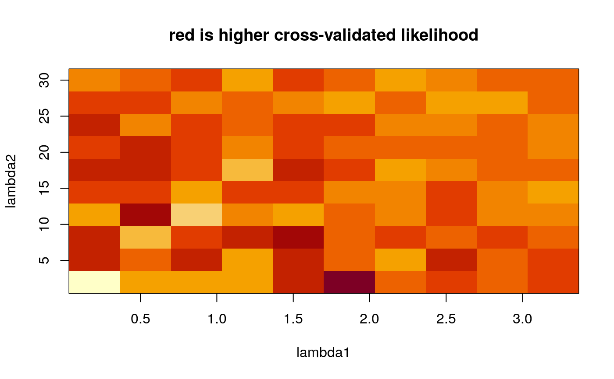

<!-- Generated by pkgdown: do not edit by hand -->
<!DOCTYPE html>
<html lang="en">
  <head>
  <meta charset="utf-8">
<meta http-equiv="X-UA-Compatible" content="IE=edge">
<meta name="viewport" content="width=device-width, initial-scale=1.0">

<title>Function calculate cross-validated likelihood on a regular grid of L1/L2 penalties — scan.l1l2 • pensim</title>


<!-- jquery -->
<script src="https://cdnjs.cloudflare.com/ajax/libs/jquery/3.4.1/jquery.min.js" integrity="sha256-CSXorXvZcTkaix6Yvo6HppcZGetbYMGWSFlBw8HfCJo=" crossorigin="anonymous"></script>
<!-- Bootstrap -->

<link rel="stylesheet" href="https://cdnjs.cloudflare.com/ajax/libs/twitter-bootstrap/3.4.1/css/bootstrap.min.css" integrity="sha256-bZLfwXAP04zRMK2BjiO8iu9pf4FbLqX6zitd+tIvLhE=" crossorigin="anonymous" />

<script src="https://cdnjs.cloudflare.com/ajax/libs/twitter-bootstrap/3.4.1/js/bootstrap.min.js" integrity="sha256-nuL8/2cJ5NDSSwnKD8VqreErSWHtnEP9E7AySL+1ev4=" crossorigin="anonymous"></script>

<!-- bootstrap-toc -->
<link rel="stylesheet" href="../bootstrap-toc.css">
<script src="../bootstrap-toc.js"></script>

<!-- Font Awesome icons -->
<link rel="stylesheet" href="https://cdnjs.cloudflare.com/ajax/libs/font-awesome/5.12.1/css/all.min.css" integrity="sha256-mmgLkCYLUQbXn0B1SRqzHar6dCnv9oZFPEC1g1cwlkk=" crossorigin="anonymous" />
<link rel="stylesheet" href="https://cdnjs.cloudflare.com/ajax/libs/font-awesome/5.12.1/css/v4-shims.min.css" integrity="sha256-wZjR52fzng1pJHwx4aV2AO3yyTOXrcDW7jBpJtTwVxw=" crossorigin="anonymous" />

<!-- clipboard.js -->
<script src="https://cdnjs.cloudflare.com/ajax/libs/clipboard.js/2.0.6/clipboard.min.js" integrity="sha256-inc5kl9MA1hkeYUt+EC3BhlIgyp/2jDIyBLS6k3UxPI=" crossorigin="anonymous"></script>

<!-- headroom.js -->
<script src="https://cdnjs.cloudflare.com/ajax/libs/headroom/0.11.0/headroom.min.js" integrity="sha256-AsUX4SJE1+yuDu5+mAVzJbuYNPHj/WroHuZ8Ir/CkE0=" crossorigin="anonymous"></script>
<script src="https://cdnjs.cloudflare.com/ajax/libs/headroom/0.11.0/jQuery.headroom.min.js" integrity="sha256-ZX/yNShbjqsohH1k95liqY9Gd8uOiE1S4vZc+9KQ1K4=" crossorigin="anonymous"></script>

<!-- pkgdown -->
<link href="../pkgdown.css" rel="stylesheet">
<script src="../pkgdown.js"></script>


<meta property="og:title" content="Function calculate cross-validated likelihood on a regular grid of L1/L2 penalties — scan.l1l2" />
<meta property="og:description" content="This function generates a grid of values of L1/L2 penalties,
then calculated cross-validated likelihood at each point on the grid.
The grid can be regular (linear progression of the penalty values), or
polynomial (finer grid for small penalty values, and coarser grid for
larger penalty values)." />


<!-- mathjax -->
<script src="https://cdnjs.cloudflare.com/ajax/libs/mathjax/2.7.5/MathJax.js" integrity="sha256-nvJJv9wWKEm88qvoQl9ekL2J+k/RWIsaSScxxlsrv8k=" crossorigin="anonymous"></script>
<script src="https://cdnjs.cloudflare.com/ajax/libs/mathjax/2.7.5/config/TeX-AMS-MML_HTMLorMML.js" integrity="sha256-84DKXVJXs0/F8OTMzX4UR909+jtl4G7SPypPavF+GfA=" crossorigin="anonymous"></script>

<!--[if lt IE 9]>
<script src="https://oss.maxcdn.com/html5shiv/3.7.3/html5shiv.min.js"></script>
<script src="https://oss.maxcdn.com/respond/1.4.2/respond.min.js"></script>
<![endif]-->


  </head>

  <body data-spy="scroll" data-target="#toc">
    <div class="container template-reference-topic">
      <header>
      <div class="navbar navbar-default navbar-fixed-top" role="navigation">
  <div class="container">
    <div class="navbar-header">
      <button type="button" class="navbar-toggle collapsed" data-toggle="collapse" data-target="#navbar" aria-expanded="false">
        <span class="sr-only">Toggle navigation</span>
        <span class="icon-bar"></span>
        <span class="icon-bar"></span>
        <span class="icon-bar"></span>
      </button>
      <span class="navbar-brand">
        <a class="navbar-link" href="../index.html">pensim</a>
        <span class="version label label-default" data-toggle="tooltip" data-placement="bottom" title="Released version">1.3.1</span>
      </span>
    </div>

    <div id="navbar" class="navbar-collapse collapse">
      <ul class="nav navbar-nav">
        <li>
  <a href="../index.html">
    <span class="fas fa fas fa-home fa-lg"></span>
     
  </a>
</li>
<li>
  <a href="../articles/pensim.html">Get started</a>
</li>
<li>
  <a href="../reference/index.html">Reference</a>
</li>
      </ul>
      <ul class="nav navbar-nav navbar-right">
        <li>
  <a href="https://github.com/waldronlab/pensim/">
    <span class="fab fa fab fa-github fa-lg"></span>
     
  </a>
</li>
      </ul>
      
    </div><!--/.nav-collapse -->
  </div><!--/.container -->
</div><!--/.navbar -->

      

      </header>

<div class="row">
  <div class="col-md-9 contents">
    <div class="page-header">
    <h1>Function calculate cross-validated likelihood on a regular grid of L1/L2 penalties</h1>
    
    <div class="hidden name"><code>scan.l1l2.Rd</code></div>
    </div>

    <div class="ref-description">
    <p>This function generates a grid of values of L1/L2 penalties,
then calculated cross-validated likelihood at each point on the grid.
The grid can be regular (linear progression of the penalty values), or
polynomial (finer grid for small penalty values, and coarser grid for
larger penalty values).</p>
    </div>

    <pre class="usage"><span class='fu'>scan.l1l2</span>(<span class='kw'>L1range</span> <span class='kw'>=</span> <span class='fu'><a href='https://rdrr.io/r/base/c.html'>c</a></span>(<span class='fl'>0.1</span>, <span class='fl'>100.1</span>),
          <span class='kw'>L2range</span> <span class='kw'>=</span> <span class='fu'><a href='https://rdrr.io/r/base/c.html'>c</a></span>(<span class='fl'>0.1</span>, <span class='fl'>100.1</span>),
          <span class='kw'>L1.ngrid</span> <span class='kw'>=</span> <span class='fl'>50</span>,
          <span class='kw'>L2.ngrid</span> <span class='kw'>=</span> <span class='fl'>50</span>,
          <span class='kw'>nprocessors</span> <span class='kw'>=</span> <span class='fl'>1</span>,
          <span class='kw'>polydegree</span> <span class='kw'>=</span> <span class='fl'>1</span>,
          <span class='kw'>cl</span> <span class='kw'>=</span> <span class='kw'>NULL</span>,
          <span class='no'>...</span>)</pre>

    <h2 class="hasAnchor" id="arguments"><a class="anchor" href="#arguments"></a>Arguments</h2>
    <table class="ref-arguments">
    <colgroup><col class="name" /><col class="desc" /></colgroup>
    <tr>
      <th>L1range</th>
      <td><p>numeric vector of length two, giving minimum and maximum constraints
    on the L1 penalty</p></td>
    </tr>
    <tr>
      <th>L2range</th>
      <td><p>numeric vector of length two, giving minimum and maximum constraints
    on the L2 penalty</p></td>
    </tr>
    <tr>
      <th>L1.ngrid</th>
      <td><p>Number of values of the L1 penalty in the regular grid of L1/L2 penalties</p></td>
    </tr>
    <tr>
      <th>L2.ngrid</th>
      <td><p>Number of values of the L2 penalty in the regular grid of L1/L2 penalties</p></td>
    </tr>
    <tr>
      <th>nprocessors</th>
      <td><p>An integer number of processors to use.</p></td>
    </tr>
    <tr>
      <th>polydegree</th>
      <td><p>power of the polynomial on which the L1/L2 penalty values are fit.
    ie if polydegree=2, penalty values could be y=x^2, x=1,2,3,..., so y=1,4,9,...</p></td>
    </tr>
    <tr>
      <th>cl</th>
      <td><p>Optional cluster object created with the makeCluster() function of
    the parallel package.  If this is not set, pensim calls
    makeCluster(nprocessors, type="SOCK").   Setting this parameter
    can enable parallelization in more diverse scenarios than multi-core
    desktops; see the documentation for the parallel package.  Note that if
    cl is user-defined, this function will not automatically run
    parallel::stopCluster() to shut down the cluster.</p></td>
    </tr>
    <tr>
      <th>...</th>
      <td><p>arguments passed on to cvl function of the penalized R package</p></td>
    </tr>
    </table>

    <h2 class="hasAnchor" id="details"><a class="anchor" href="#details"></a>Details</h2>

    <p>This function sets up a SNOW (Simple Network of Workstations) "sock"
  cluster to parallelize the task of scanning a grid of penalty values
  to search for suitable starting values for two-dimensional
  optimization of the Elastic Net.</p>
    <h2 class="hasAnchor" id="value"><a class="anchor" href="#value"></a>Value</h2>

    <p></p>
<dt>cvl</dt><dd><p>matrix of cvl values along the grid</p></dd>
  <dt>L1range</dt><dd><p>range of L1 penalties to scan</p></dd>
  <dt>L2range</dt><dd><p>range of L2 penalties to scan</p></dd>
  <dt>xlab</dt><dd><p>A text string indicating the range of L1 penalties</p></dd>
  <dt>ylab</dt><dd><p>A text string giving the range of L2 penalties</p></dd>
  <dt>zlab</dt><dd><p>A text string giving the range of cvl values</p></dd>
  <dt>note</dt><dd><p>A note to the user that rows of cvl correspond to values of lambda1, columns to lambda2</p></dd>

    <h2 class="hasAnchor" id="references"><a class="anchor" href="#references"></a>References</h2>

    <p>Waldron L, Pintilie M, Tsao M-S, Shepherd FA, Huttenhower C*, Jurisica
  I*: Optimized application of penalized regression methods to diverse
  genomic data. Bioinformatics 2011, 27:3399-3406.  (*equal contribution)</p>
    <h2 class="hasAnchor" id="note"><a class="anchor" href="#note"></a>Note</h2>

    <p>Depends on the R packages: penalized, parallel, rlecuyer</p>
    <h2 class="hasAnchor" id="see-also"><a class="anchor" href="#see-also"></a>See also</h2>

    <div class='dont-index'><p>cvl</p></div>

    <h2 class="hasAnchor" id="examples"><a class="anchor" href="#examples"></a>Examples</h2>
    <pre class="examples"><div class='input'><span class='fu'><a href='https://rdrr.io/r/utils/data.html'>data</a></span>(<span class='no'>beer.exprs</span>)
<span class='fu'><a href='https://rdrr.io/r/utils/data.html'>data</a></span>(<span class='no'>beer.survival</span>)

<span class='co'>##select just 250 genes to speed computation:</span>
<span class='fu'><a href='https://rdrr.io/r/base/Random.html'>set.seed</a></span>(<span class='fl'>1</span>)
<span class='no'>beer.exprs.sample</span> <span class='kw'>&lt;-</span> <span class='no'>beer.exprs</span>[<span class='fu'><a href='https://rdrr.io/r/base/sample.html'>sample</a></span>(<span class='fl'>1</span>:<span class='fu'><a href='https://rdrr.io/r/base/nrow.html'>nrow</a></span>(<span class='no'>beer.exprs</span>), <span class='fl'>250</span>), ]

<span class='no'>gene.quant</span> <span class='kw'>&lt;-</span> <span class='fu'><a href='https://rdrr.io/r/base/apply.html'>apply</a></span>(<span class='no'>beer.exprs.sample</span>, <span class='fl'>1</span>, <span class='no'>quantile</span>, <span class='kw'>probs</span> <span class='kw'>=</span> <span class='fl'>0.75</span>)
<span class='no'>dat.filt</span> <span class='kw'>&lt;-</span> <span class='no'>beer.exprs.sample</span>[<span class='no'>gene.quant</span> <span class='kw'>&gt;</span> <span class='fu'><a href='https://rdrr.io/r/base/Log.html'>log2</a></span>(<span class='fl'>150</span>), ]
<span class='no'>gene.iqr</span> <span class='kw'>&lt;-</span> <span class='fu'><a href='https://rdrr.io/r/base/apply.html'>apply</a></span>(<span class='no'>dat.filt</span>, <span class='fl'>1</span>, <span class='no'>IQR</span>)
<span class='no'>dat.filt</span> <span class='kw'>&lt;-</span> <span class='fu'><a href='https://rdrr.io/r/base/matrix.html'>as.matrix</a></span>(<span class='no'>dat.filt</span>[<span class='no'>gene.iqr</span> <span class='kw'>&gt;</span> <span class='fl'>1</span>, ])
<span class='no'>dat.filt</span> <span class='kw'>&lt;-</span> <span class='fu'><a href='https://rdrr.io/r/base/t.html'>t</a></span>(<span class='no'>dat.filt</span>)

<span class='co'>## Define training and test sets</span>
<span class='fu'><a href='https://rdrr.io/r/base/Random.html'>set.seed</a></span>(<span class='fl'>9</span>)
<span class='no'>trainingset</span> <span class='kw'>&lt;-</span> <span class='fu'><a href='https://rdrr.io/r/base/sample.html'>sample</a></span>(<span class='fu'><a href='https://rdrr.io/r/base/colnames.html'>rownames</a></span>(<span class='no'>dat.filt</span>), <span class='fu'><a href='https://rdrr.io/r/base/Round.html'>round</a></span>(<span class='fu'><a href='https://rdrr.io/r/base/nrow.html'>nrow</a></span>(<span class='no'>dat.filt</span>) / <span class='fl'>2</span>))
<span class='no'>testset</span> <span class='kw'>&lt;-</span> <span class='fu'><a href='https://rdrr.io/r/base/colnames.html'>rownames</a></span>(<span class='no'>dat.filt</span>)[!<span class='fu'><a href='https://rdrr.io/r/base/colnames.html'>rownames</a></span>(<span class='no'>dat.filt</span>) <span class='kw'>%in%</span> <span class='no'>trainingset</span>]

<span class='no'>dat.training</span> <span class='kw'>&lt;-</span> <span class='fu'><a href='https://rdrr.io/r/base/data.frame.html'>data.frame</a></span>(<span class='no'>dat.filt</span>[<span class='no'>trainingset</span>, ])
<span class='no'>pheno.training</span> <span class='kw'>&lt;-</span> <span class='no'>beer.survival</span>[<span class='no'>trainingset</span>, ]

<span class='fu'><a href='https://rdrr.io/r/base/library.html'>library</a></span>(<span class='no'>survival</span>)
<span class='no'>surv.training</span> <span class='kw'>&lt;-</span> <span class='fu'><a href='https://rdrr.io/pkg/survival/man/Surv.html'>Surv</a></span>(<span class='no'>pheno.training</span>$<span class='no'>os</span>, <span class='no'>pheno.training</span>$<span class='no'>status</span>)

<span class='no'>dat.test</span> <span class='kw'>&lt;-</span> <span class='fu'><a href='https://rdrr.io/r/base/data.frame.html'>data.frame</a></span>(<span class='no'>dat.filt</span>[<span class='no'>testset</span>, ])
<span class='fu'><a href='https://rdrr.io/r/base/all.equal.html'>all.equal</a></span>(<span class='fu'><a href='https://rdrr.io/r/base/colnames.html'>colnames</a></span>(<span class='no'>dat.training</span>), <span class='fu'><a href='https://rdrr.io/r/base/colnames.html'>colnames</a></span>(<span class='no'>dat.test</span>))</div><div class='output co'>#&gt; [1] TRUE</div><div class='input'><span class='no'>pheno.test</span> <span class='kw'>&lt;-</span> <span class='no'>beer.survival</span>[<span class='no'>testset</span>, ]
<span class='no'>surv.test</span> <span class='kw'>&lt;-</span> <span class='fu'><a href='https://rdrr.io/pkg/survival/man/Surv.html'>Surv</a></span>(<span class='no'>pheno.test</span>$<span class='no'>os</span>, <span class='no'>pheno.test</span>$<span class='no'>status</span>)

<span class='fu'><a href='https://rdrr.io/r/base/Random.html'>set.seed</a></span>(<span class='fl'>9</span>)
<span class='fu'><a href='https://rdrr.io/r/base/system.time.html'>system.time</a></span>(
  <span class='no'>output</span> <span class='kw'>&lt;-</span> <span class='fu'>scan.l1l2</span>(
    <span class='kw'>L1range</span> <span class='kw'>=</span> <span class='fu'><a href='https://rdrr.io/r/base/c.html'>c</a></span>(<span class='fl'>0.2</span>, <span class='fl'>3.2</span>),
    <span class='kw'>L2range</span> <span class='kw'>=</span> <span class='fu'><a href='https://rdrr.io/r/base/c.html'>c</a></span>(<span class='fl'>2</span>, <span class='fl'>30</span>),
    <span class='kw'>L1.ngrid</span> <span class='kw'>=</span> <span class='fl'>10</span>,
    <span class='kw'>L2.ngrid</span> <span class='kw'>=</span> <span class='fl'>10</span>,
    <span class='kw'>polydegree</span> <span class='kw'>=</span> <span class='fl'>1</span>,
    <span class='kw'>nprocessors</span> <span class='kw'>=</span> <span class='fl'>1</span>,
    <span class='kw'>response</span> <span class='kw'>=</span> <span class='no'>surv.training</span>,
    <span class='kw'>penalized</span> <span class='kw'>=</span> <span class='no'>dat.training</span>,
    <span class='kw'>fold</span> <span class='kw'>=</span> <span class='fl'>4</span>,
    <span class='kw'>positive</span> <span class='kw'>=</span> <span class='fl'>FALSE</span>,
    <span class='kw'>standardize</span> <span class='kw'>=</span> <span class='fl'>TRUE</span>
  )
)</div><div class='output co'>#&gt; 1234123412341234123412341234123412341234123412341234123412341234123412341234123412341234123412341234123412341234123412341234123412341234123412341234123412341234123412341234123412341234123412341234123412341234123412341234123412341234123412341234123412341234123412341234123412341234123412341234123412341234123412341234123412341234123412341234123412341234123412341234123412341234123412341234123412341234</div><div class='output co'>#&gt;    user  system elapsed 
#&gt;   1.762   0.001   3.639 </div><div class='input'>
<span class='co'>##Note that the cvl surface is not smooth because a different folding of</span>
<span class='co'>##the data was used for each cvl calculation</span>
<span class='fu'><a href='https://rdrr.io/r/graphics/image.html'>image</a></span>(
  <span class='kw'>x</span> <span class='kw'>=</span> <span class='fu'><a href='https://rdrr.io/r/base/seq.html'>seq</a></span>(<span class='no'>output</span>$<span class='no'>L1range</span>[<span class='fl'>1</span>], <span class='no'>output</span>$<span class='no'>L1range</span>[<span class='fl'>2</span>], <span class='kw'>length.out</span> <span class='kw'>=</span> <span class='fu'><a href='https://rdrr.io/r/base/nrow.html'>nrow</a></span>(<span class='no'>output</span>$<span class='no'>cvl</span>)),
  <span class='kw'>y</span> <span class='kw'>=</span> <span class='fu'><a href='https://rdrr.io/r/base/seq.html'>seq</a></span>(<span class='no'>output</span>$<span class='no'>L2range</span>[<span class='fl'>1</span>], <span class='no'>output</span>$<span class='no'>L2range</span>[<span class='fl'>2</span>], <span class='kw'>length.out</span> <span class='kw'>=</span> <span class='fu'><a href='https://rdrr.io/r/base/nrow.html'>ncol</a></span>(<span class='no'>output</span>$<span class='no'>cvl</span>)),
  <span class='kw'>z</span> <span class='kw'>=</span> <span class='no'>output</span>$<span class='no'>cvl</span>,
  <span class='kw'>xlab</span> <span class='kw'>=</span> <span class='st'>"lambda1"</span>,
  <span class='kw'>ylab</span> <span class='kw'>=</span> <span class='st'>"lambda2"</span>,
  <span class='kw'>main</span> <span class='kw'>=</span> <span class='st'>"red is higher cross-validated likelihood"</span>
)</div><div class='img'></div></pre>
  </div>
  <div class="col-md-3 hidden-xs hidden-sm" id="pkgdown-sidebar">
    <nav id="toc" data-toggle="toc" class="sticky-top">
      <h2 data-toc-skip>Contents</h2>
    </nav>
  </div>
</div>


      <footer>
      <div class="copyright">
  <p>Developed by Waldron, Levi, Pintilie, Melania, Tsao, {Ming-Sound}, Shepherd, Frances A, Huttenhower, Curtis, Jurisica, Igor.</p>
</div>

<div class="pkgdown">
  <p>Site built with <a href="https://pkgdown.r-lib.org/">pkgdown</a> 1.5.0.</p>
</div>

      </footer>
   </div>

  


  </body>
</html>


